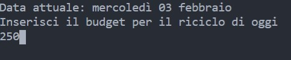
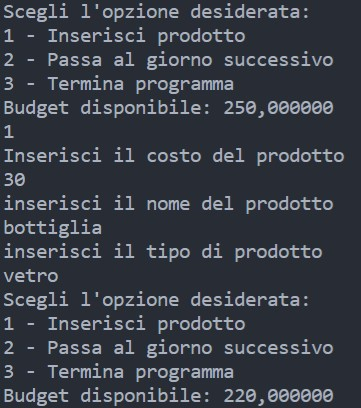
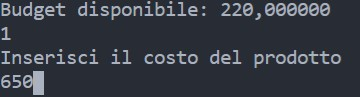
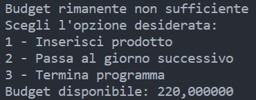
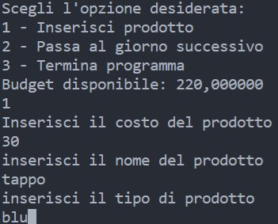
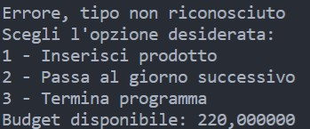
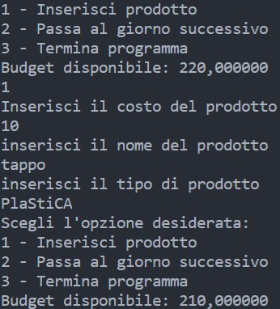
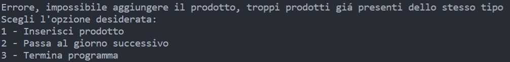
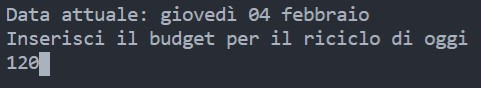
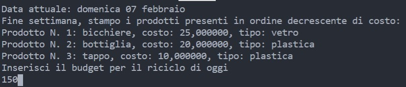

Riciclatore Automatico
(richiede una connessione ad internet per la corretta visualizzazione)
Simulazione del programma:

Il programma, all'avvio, stampa la data della giornata attuale, e richiede il budget da cui attingere per l'inserimento dei rifiuti, per quanto riguarda la giornata stessa

Una volta inserito il budget, viene presentata una lista con le opzioni possibili da effettuare, ovvero: Aggiungere un rifiuto, Passare alla giornata successiva, oppure Terminare il programma. Per quanto riguarda la prima opzione, il programma chiederà poi all'utente alcuni dettagli, come costo, nome e tipo di rifiuto, per poi aggiungerlo alla lista interna, sottraendo il costo dal budget giornaliero iniziale

Vengono, però, effettuati alcuni controlli, in modo da assicurare la correttezza dei dati inseriti. ad esempio, nel caso di un costo del rifiuto superiore al budget presente, il programma mostrerà un errore e non aggiungerà il rifiuto alla lista interna

← Messaggio di errore nel caso di costo troppo elevato

Il programma, inoltre, verifica la correttezza del tipo inserito con un "dizionario" predefinito, in modo da assicurarsi che sia stato digitato senza errori. Di base vengono accettati i termini carta,plastica,vetro,organico,indifferenziata. Il controllo è case-insensitive, ovvero non differenzia tra lettere maiuscole e minuscole

← Messaggio di errore nel caso di tipo di rifiuto non riconosciuto

← Esempio di test per controllo case-insensitive. Il programma non ha mostrato messaggi di errore nonostante la stringa presenti diverse lettere maiuscole e minuscole

Come ultimo controllo, il programma monitora anche il numero di rifiuti di un determinato tipo. Se, nell'inserimento da parte dell'utente, si dovesse eccedere la soglia preimpostata (di base a 20), il programma non completa i'inserimento e mostra un messaggio di errore

Nel caso si scelga di passare al giorno successivo, invece, il programma ci permetterà di simulare una nuova data, aumentata di un giorno rispetto alla precedente, dove potrà essere inserito nuovamente un budget giornaliero

Inoltre, se la data dovesse risultare come domenica, il programma, prima di richiedere nuovamente un budget, stamperà la lista dei rifiuti già inseriti, in ordine decrescente di costo